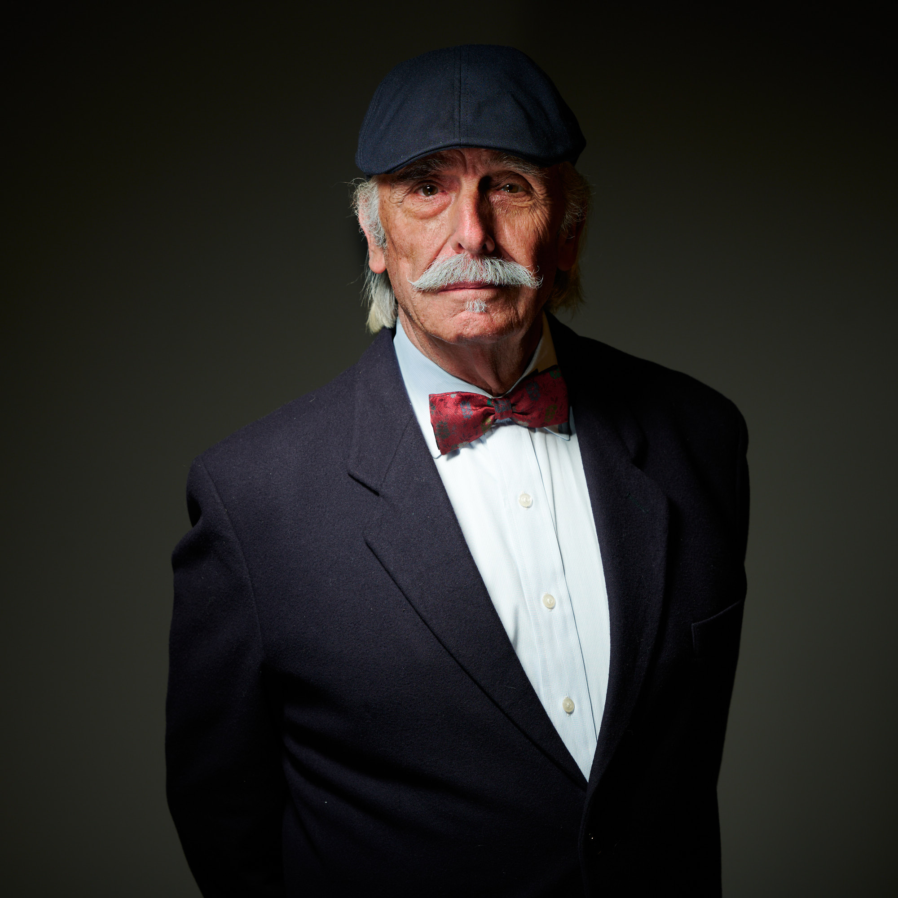
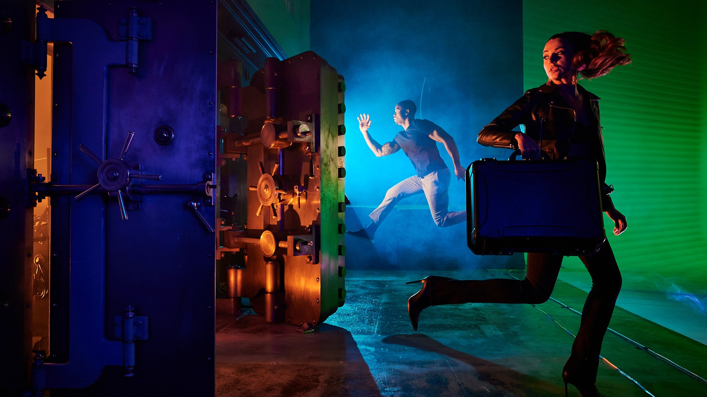

Last week was busy! Scott Kelby and I virtually taught a complete, cover the bases look at flash photography. I was in a studio in Connecticut, and Scott taught from his home base in Tampa. He worked folks through the basics of
buttons, dials and straightforward flash techniques, and I chimed in from the Northeast with a look at more complex strategies. I was working in a wonderful facility in Norwalk, called Space 67, which has been converted into
a spacious studio, but has the benefit of having been a bank in a previous life. I was able to use the old vaults to demonstrate a location approach.
We took a fun ramble through umbrellas, soft boxes, ring flash, V-flat
or “book” lighting, silks, hard light, gels, shadow makers, sometimes using single light sources, and then teaming shapers together for different looks. And spin the dial to Florida, and all the basics were being explained
fully by Scott, who is one of the finest teachers around. Thanks to him and his entire team down at Kelby One.
And thanks to our amazing team up here in chilly CT! Lynn DelMastro, as always found the place to work with Space 67. Our talent was wonderful as was the crew. And, the flash conference crowd! You guys are amazing! I was getting
texts and encouragement throughout, and the questions were all bang on. Many thanks to all who tuned in.
Here’s a quick tour of our talent. Lovely model Sheetal poses with a combo of V-flat light with a dash of ring
flash. I rarely use a ring flash, but I had so much fun with the Profoto ProRing2 Plus that I will be taking it out more.
Distinguished looking Larry with Lastolite Speed-Lite 2 Plus boxes, and, I believe, a raw flash fill. (Truth be told, I raced through so many light setups in two days I’m a bit hard pressed to remember exactly what I did!)
Nakwan and Yanika. On location at the vaults. Lots of gels, and location specific raw light, with a smoke machine. Really gave the new Profoto A10 units a spin on this one. They offer the whole package for a shot like this, with the magnetic clip on gels and grids. Just a silly notion about a tandem pair of bank robbers, but fun to light. They were great, both individually, and together in this frame. Lots of fun to work with talent like this!
